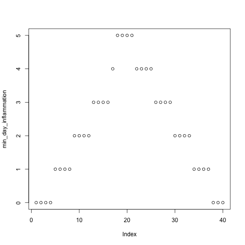

Analyzing Patient Data
Overview
Teaching: 45
Exercises: 0
Questions
Questions
- How do I read data into R?
- How do I assign variables?
- What is a data frame?
- How do I access subsets of a data frame?
- How do I calculate simple statistics like mean and median?
- Where can I get help?
- How can I plot my data?
Objectives
- Read tabular data from a file into a program.
- Assign values to variables.
- Select individual values and subsections from data.
- Perform operations on a data frame of data.
- Display simple graphs.
We are studying inflammation in patients who have been given a new treatment for arthritis, and need to analyze the first dozen data sets. The data sets are stored in comma-separated values (CSV format. Each row holds the observations for just one patient. Each column holds the inflammation measured in a day, so we have a set of values in successive days. The first few rows of our first file look like this:
0,0,1,3,1,2,4,7,8,3,3,3,10,5,7,4,7,7,12,18,6,13,11,11,7,7,4,6,8,8,4,4,5,7,3,4,2,3,0,0
0,1,2,1,2,1,3,2,2,6,10,11,5,9,4,4,7,16,8,6,18,4,12,5,12,7,11,5,11,3,3,5,4,4,5,5,1,1,0,1
0,1,1,3,3,2,6,2,5,9,5,7,4,5,4,15,5,11,9,10,19,14,12,17,7,12,11,7,4,2,10,5,4,2,2,3,2,2,1,1
0,0,2,0,4,2,2,1,6,7,10,7,9,13,8,8,15,10,10,7,17,4,4,7,6,15,6,4,9,11,3,5,6,3,3,4,2,3,2,1
0,1,1,3,3,1,3,5,2,4,4,7,6,5,3,10,8,10,6,17,9,14,9,7,13,9,12,6,7,7,9,6,3,2,2,4,2,0,1,1We want to:
- Load data into memory,
- Calculate the average value of inflammation per day across all patients, and
- Plot the results.
To do all that, we’ll have to learn a little bit about programming.
Loading Data
Let’s import the file called inflammation-01.csv into our R environment. To import the file, first we need to tell our computer where the file is. We do that by choosing a working directory, that is, a local directory on our computer containing the files we need. This is very important in R. If we forget this step we’ll get an error message saying that the file does not exist. We can set the working directory using the function setwd. For this example, we change the path to our new directory at the desktop:
setwd("~/Desktop/r-novice-inflammation/")Just like in the Unix Shell, we type the command and then press Return (or Enter). Also similar to the Unix Shell, we can use tab completion to make it easier to type the working directory. So while typing inside the setwd command’s quotes, we can press Tab to list possible directories. Alternatively we can change the working directory using the RStudio GUI using the menu option Session -> Set Working Directory -> Choose Directory...
The data file is located in the directory data inside the working directory. Now we can load the data into R using read.csv:
read.csv(file = "data/inflammation-01.csv", header = FALSE)The expression read.csv(...) is a function call that asks R to run the function read.csv.
read.csv has two arguments: the name of the file we want to read, and whether the first line of the file contains names for the columns of data. The filename needs to be a character string (or string for short, so we put it in quotes. Assigning the second argument, header, to be FALSE indicates that the data file does not have column headers. We’ll talk more about the value FALSE, and its converse TRUE, in lesson 04. In case of our inflammation-01.csv example, R auto-generates column names in the sequence V1 (for “variable 1”), V2, and so on, until V40.
Loading Data with Headers
What happens if you forget to put header = FALSE? The default value is header = TRUE, which you can check with ?read.csv or help(read.csv). What do you expect will happen if you leave the default value? Before you run any code, think about what will happen to the first few rows of your data frame, and its overall size. Then run the following code and see if your expectations agree:
read.csv(file = "data/inflammation-01.csv")Solution
R will construct column headers from values in your first row of data, resulting in X0 X0.1 X1 X3 X1.1 X2 ....
Note that the X is prepended just a number would not be a valid variable name. Because that’s what column headers are, the same rules apply. Appending .1, .2 etc. is necessary to avoid duplicate column headers.
Reading Different Decimal Point Formats
Depending on the country you live in, your standard can use the dot or the comma as decimal mark. Also, different devices or software can generate data with different decimal points. Take a look at ?read.csv and write the code to load a file called commadec.txt that has numeric values with commas as decimal mark, separated by semicolons.
Solution
read.csv(file = "data/commadec.txt", sep = ";", dec = ",")or the built-in shortcut:
read.csv2(file = "data/commadec.txt")A function will perform its given action on whatever value is passed to the argument(s). For example, in this case if we provided the name of a different file to the argument file, read.csv would read that instead. We’ll learn more about the details of functions and their arguments in the next lesson.
Since we didn’t tell it to do anything else with the function’s output, the console will display the full contents of the file inflammation-01.csv. Try it out.
read.csv reads the file, but we can’t use the data unless we assign it to a variable. We can think of a variable as a container with a name, such as x, current_temperature, or subject_id that contains one or more values. We can create a new variable and assign a value to it using <-.
weight_kg <- 55Once a variable is created, we can use the variable name to refer to the value it was assigned. The variable name now acts as a tag. Whenever R reads that tag (weight_kg), it substitutes the value (55).

To see the value of a variable, we can print it by typing the name of the variable and hitting Return (or Enter). In general, R will print to the console any object returned by a function or operation unless we assign it to a variable.
weight_kg[1] 55We can treat our variable like a regular number, and do arithmetic with it:
# weight in pounds:
2.2 * weight_kg[1] 121
We can also change a variable’s value by assigning it a new value:
weight_kg <- 57.5
# weight in kilograms is now
weight_kg[1] 57.5
Assigning a new value to a variable breaks the connection with the old value; R forgets that number and applies the variable name to the new value.
When you assign a value to a variable, R only stores the value, not the calculation you used to create it. This is an important point if you’re used to the way a spreadsheet program automatically updates linked cells. Let’s look at an example.
First, we’ll convert weight_kg into pounds, and store the new value in the variable weight_lb:
weight_lb <- 2.2 * weight_kg
# weight in kg...
weight_kg[1] 57.5# ...and in pounds
weight_lb[1] 126.5In words, we’re asking R to look up the value we tagged weight_kg, multiply it by 2.2, and tag the result with the name weight_lb:

If we now change the value of weight_kg:
weight_kg <- 100.0
# weight in kg now...
weight_kg[1] 100# ...and weight in pounds still
weight_lb[1] 126.5
Since weight_lb doesn’t “remember” where its value came from, it isn’t automatically updated when weight_kg changes. This is different from the way spreadsheets work.
Now that we know how to assign things to variables, let’s re-run read.csv and save its result into a variable called ‘dat’:
dat <- read.csv(file = "data/inflammation-01.csv", header = FALSE)This statement doesn’t produce any output because the assignment doesn’t display anything. If we want to check if our data has been loaded, we can print the variable’s value by typing the name of the variable dat. However, for large data sets it is convenient to use the function head to display only the first few rows of data.
head(dat) V1 V2 V3 V4 V5 V6 V7 V8 V9 V10 V11 V12 V13 V14 V15 V16 V17 V18 V19 V20 V21
1 0 0 1 3 1 2 4 7 8 3 3 3 10 5 7 4 7 7 12 18 6
2 0 1 2 1 2 1 3 2 2 6 10 11 5 9 4 4 7 16 8 6 18
3 0 1 1 3 3 2 6 2 5 9 5 7 4 5 4 15 5 11 9 10 19
4 0 0 2 0 4 2 2 1 6 7 10 7 9 13 8 8 15 10 10 7 17
5 0 1 1 3 3 1 3 5 2 4 4 7 6 5 3 10 8 10 6 17 9
6 0 0 1 2 2 4 2 1 6 4 7 6 6 9 9 15 4 16 18 12 12
V22 V23 V24 V25 V26 V27 V28 V29 V30 V31 V32 V33 V34 V35 V36 V37 V38 V39 V40
1 13 11 11 7 7 4 6 8 8 4 4 5 7 3 4 2 3 0 0
2 4 12 5 12 7 11 5 11 3 3 5 4 4 5 5 1 1 0 1
3 14 12 17 7 12 11 7 4 2 10 5 4 2 2 3 2 2 1 1
4 4 4 7 6 15 6 4 9 11 3 5 6 3 3 4 2 3 2 1
5 14 9 7 13 9 12 6 7 7 9 6 3 2 2 4 2 0 1 1
6 5 18 9 5 3 10 3 12 7 8 4 7 3 5 4 4 3 2 1Assigning Values to Variables
Draw diagrams showing what variables refer to what values after each statement in the following program:
mass <- 47.5
age <- 122
mass <- mass * 2.0
age <- age - 20Solution
mass <- 47.5
age <- 122
mass <- mass * 2.0
age <- age - 20
Manipulating Data
Now that our data are loaded into R, we can start doing things with them. First, let’s ask what type of thing dat is:
class(dat)[1] "data.frame"The output tells us that it’s a data frame. Think of this structure as a spreadsheet in MS Excel that many of us are familiar with. Data frames are very useful for storing data and you will use them frequently when programming in R. A typical data frame of experimental data contains individual observations in rows and variables in columns.
We can see the shape, or dimensions, of the data frame with the function dim:
dim(dat)[1] 60 40This tells us that our data frame, dat, has 60 rows and 40 columns.
If we want to get a single value from the data frame, we can provide an index in square brackets. The first number specifies the row and the second the column:
# first value in dat, row 1, column 1
dat[1, 1][1] 0# middle value in dat, row 30, column 20
dat[30, 20][1] 16The first value in a data frame index is the row, the second value is the column. If we want to select more than one row or column, we can use the function c, which stands for combine. For example, to pick columns 10 and 20 from rows 1, 3, and 5, we can do this:
dat[c(1, 3, 5), c(10, 20)] V10 V20
1 3 18
3 9 10
5 4 17We frequently want to select contiguous rows or columns, such as the first ten rows, or columns 3 through 7. You can use c for this, but it’s more convenient to use the : operator. This special function generates sequences of numbers:
1:5[1] 1 2 3 4 53:12 [1] 3 4 5 6 7 8 9 10 11 12For example, we can select the first ten columns of values for the first four rows like this:
dat[1:4, 1:10] V1 V2 V3 V4 V5 V6 V7 V8 V9 V10
1 0 0 1 3 1 2 4 7 8 3
2 0 1 2 1 2 1 3 2 2 6
3 0 1 1 3 3 2 6 2 5 9
4 0 0 2 0 4 2 2 1 6 7or the first ten columns of rows 5 to 10 like this:
dat[5:10, 1:10] V1 V2 V3 V4 V5 V6 V7 V8 V9 V10
5 0 1 1 3 3 1 3 5 2 4
6 0 0 1 2 2 4 2 1 6 4
7 0 0 2 2 4 2 2 5 5 8
8 0 0 1 2 3 1 2 3 5 3
9 0 0 0 3 1 5 6 5 5 8
10 0 1 1 2 1 3 5 3 5 8If you want to select all rows or all columns, leave that index value empty.
# All columns from row 5
dat[5, ] V1 V2 V3 V4 V5 V6 V7 V8 V9 V10 V11 V12 V13 V14 V15 V16 V17 V18 V19 V20 V21
5 0 1 1 3 3 1 3 5 2 4 4 7 6 5 3 10 8 10 6 17 9
V22 V23 V24 V25 V26 V27 V28 V29 V30 V31 V32 V33 V34 V35 V36 V37 V38 V39 V40
5 14 9 7 13 9 12 6 7 7 9 6 3 2 2 4 2 0 1 1# All rows from column 16-18
dat[, 16:18] V16 V17 V18
1 4 7 7
2 4 7 16
3 15 5 11
4 8 15 10
5 10 8 10
6 15 4 16
7 13 5 12
8 9 15 11
9 11 9 10
10 6 13 8
11 3 7 13
12 8 14 11
13 12 4 17
14 3 10 13
15 5 7 17
16 10 7 8
17 11 12 5
18 4 14 7
19 11 15 17
20 13 6 5
21 15 13 6
22 5 12 12
23 14 5 5
24 13 7 14
25 4 12 9
26 9 5 16
27 13 4 13
28 6 15 6
29 7 6 11
30 6 8 7
31 14 12 8
32 3 8 10
33 15 15 10
34 4 12 9
35 15 9 17
36 11 5 7
37 7 4 7
38 10 6 7
39 15 12 13
40 6 8 15
41 5 7 5
42 6 10 13
43 15 11 12
44 11 6 10
45 15 12 15
46 6 7 11
47 11 16 12
48 15 5 15
49 14 4 6
50 4 7 9
51 10 13 6
52 15 15 12
53 11 15 13
54 6 11 12
55 13 8 9
56 8 8 16
57 4 16 11
58 13 13 9
59 12 15 5
60 9 14 11If you leave both index values empty (i.e., dat[,]), you get the entire data frame.
Now let’s perform some common mathematical operations to learn more about our inflammation data. When analyzing data we often want to look at partial statistics, such as the maximum value per patient or the average value per day. One way to do this is to select the data we want to create a new temporary data frame, and then perform the calculation on this subset:
# first row, all of the columns
patient_1 <- dat[1, ]
# max inflammation for patient 1
max(patient_1)[1] 18We don’t actually need to store the row in a variable of its own. Instead, we can combine the selection and the function call:
# max inflammation for patient 2
max(dat[2, ])[1] 18R also has functions for other common calculations, e.g. finding the minimum, mean, median, and standard deviation of the data:
# minimum inflammation on day 7
min(dat[, 7])[1] 1# mean inflammation on day 7
mean(dat[, 7])[1] 3.8# median inflammation on day 7
median(dat[, 7])[1] 4# standard deviation of inflammation on day 7
sd(dat[, 7])[1] 1.725187R also has a function that summaries the previous common calculations:
# Summarize function
summary(dat[, 1:4]) V1 V2 V3 V4
Min. :0 Min. :0.00 Min. :0.000 Min. :0.00
1st Qu.:0 1st Qu.:0.00 1st Qu.:1.000 1st Qu.:1.00
Median :0 Median :0.00 Median :1.000 Median :2.00
Mean :0 Mean :0.45 Mean :1.117 Mean :1.75
3rd Qu.:0 3rd Qu.:1.00 3rd Qu.:2.000 3rd Qu.:3.00
Max. :0 Max. :1.00 Max. :2.000 Max. :3.00 For every column in the data frame, the function “summary” calculates: the minimun value, the first quartile, the median, the mean, the third quartile and the max value, giving helpful details about the sample distribution.
What if we need the maximum inflammation for all patients, or the average for each day? As the diagram below shows, we want to perform the operation across a margin of the data frame:

To support this, we can use the apply function.
apply allows us to repeat a function on all of the rows (MARGIN = 1) or columns (MARGIN = 2) of a data frame.
Thus, to obtain the average inflammation of each patient we will need to calculate the mean of all of the rows (MARGIN = 1) of the data frame.
avg_patient_inflammation <- apply(dat, 1, mean)And to obtain the average inflammation of each day we will need to calculate the mean of all of the columns (MARGIN = 2) of the data frame.
avg_day_inflammation <- apply(dat, 2, mean)Since the second argument to apply is MARGIN, the above command is equivalent to apply(dat, MARGIN = 2, mean). We’ll learn why this is so in the next lesson.
Subsetting Data
We can take subsets of character vectors as well:
animal <- c("m", "o", "n", "k", "e", "y")
# first three characters
animal[1:3][1] "m" "o" "n"# last three characters
animal[4:6][1] "k" "e" "y"If the first four characters are selected using the subset
animal[1:4], how can we obtain the first four characters in reverse order?What is
animal[-1]? What isanimal[-4]? Given those answers, explain whatanimal[-1:-4]does.Use a subset of
animalto create a new character vector that spells the word “eon”, i.e.c("e", "o", "n").
Solutions
animal[4:1]"o" "n" "k" "e" "y"and"m" "o" "n" "e" "y", which means that a single-removes the element at the given index position.animal[-1:-4]remove the subset, returning"e" "y", which is equivalent toanimal[5:6].animal[c(5,2,3)]combines indexing with thecombine function.
Subsetting More Data
Suppose you want to determine the maximum inflammation for patient 5 across days three to seven. To do this you would extract the relevant subset from the data frame and calculate the maximum value. Which of the following lines of R code gives the correct answer?
max(dat[5, ])max(dat[3:7, 5])max(dat[5, 3:7])max(dat[5, 3, 7])
Solution
Answer: 3
Explanation: You want to extract the part of the dataframe representing data for patient 5 from days three to seven. In this dataframe, patient data is organised in rows and the days are represented by the columns. Subscripting in R follows the [i, j] principle, where i = rows and j = columns. Thus, answer 3 is correct since the patient is represented by the value for i (5) and the days are represented by the values in j, which is a subset spanning day 3 to 7.
Subsetting and Re-Assignment
Using the inflammation data frame dat from above: Let’s pretend there was something wrong with the instrument on the first five days for every second patient (#2, 4, 6, etc.), which resulted in the measurements being twice as large as they should be.
- Write a vector containing each affected patient (hint:
?seq) - Create a new data frame in which you halve the first five days’ values in only those patients
- Print out the corrected data frame to check that your code has fixed the problem
Solution
whichPatients <- seq(2, 60, 2) # i.e., which rows
whichDays <- seq(1, 5) # i.e., which columns
dat2 <- dat
# check the size of your subset: returns `30 5`, that is 30 [rows=patients] by 5 [columns=days]
dim(dat2[whichPatients, whichDays])
dat2[whichPatients, whichDays] <- dat2[whichPatients, whichDays] / 2
dat2Using the Apply Function on Patient Data
Challenge: the apply function can be used to summarize datasets and subsets of data across rows and columns using the MARGIN argument. Suppose you want to calculate the mean inflammation for specific days and patients in the patient dataset (i.e. 60 patients across 40 days).
Please use a combination of the apply function and indexing to:
- calculate the mean inflammation for patients 1 to 5 over the whole 40 days
- calculate the mean inflammation for days 1 to 10 (across all patients).
- calculate the mean inflammation for every second day (across all patients).
Think about the number of rows and columns you would expect as the result before each apply call and check your intuition by applying the mean function.
Solution
# 1.
apply(dat[1:5, ], 1, mean)
# 2.
apply(dat[, 1:10], 2, mean)
# 3.
apply(dat[, seq(1, 40, by = 2)], 2, mean)Plotting
The mathematician Richard Hamming once said, “The purpose of computing is insight, not numbers,” and the best way to develop insight is often to visualize data. Visualization deserves an entire lecture (or course) of its own, but we can explore a few of R’s plotting features.
Let’s take a look at the average inflammation over time. Recall that we already calculated these values above using apply(dat, 2, mean) and saved them in the variable avg_day_inflammation. Plotting the values is done with the function plot.
plot(avg_day_inflammation)
Above, we gave the function plot a vector of numbers corresponding to the average inflammation per day across all patients. plot created a scatter plot where the y-axis is the average inflammation level and the x-axis is the order, or index, of the values in the vector, which in this case correspond to the 40 days of treatment. The result is roughly a linear rise and fall, which is suspicious: based on other studies, we expect a sharper rise and slower fall. Let’s have a look at two other statistics: the maximum and minimum inflammation per day.
max_day_inflammation <- apply(dat, 2, max)
plot(max_day_inflammation)
min_day_inflammation <- apply(dat, 2, min)
plot(min_day_inflammation)
The maximum value rises and falls perfectly smoothly, while the minimum seems to be a step function. Neither result seems particularly likely, so either there’s a mistake in our calculations or something is wrong with our data.
Plotting Data
Create a plot showing the standard deviation of the inflammation data for each day across all patients.
Solution
sd_day_inflammation <- apply(dat, 2, sd)
plot(sd_day_inflammation){% include links.md %}
Keypoints
- Use
variable <- valueto assign a value to a variable in order to record it in memory. - Objects are created on demand whenever a value is assigned to them.
- The function
dimgives the dimensions of a data frame. - Use
object[x, y]to select a single element from a data frame. - Use
from:toto specify a sequence that includes the indices fromfromtoto. - All the indexing and subsetting that works on data frames also works on vectors.
- Use
#to add comments to programs. - Use
mean,max,minandsdto calculate simple statistics. - Use
applyto calculate statistics across the rows or columns of a data frame. - Use
plotto create simple visualizations.